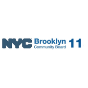
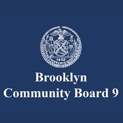

Where they serve
 City Council
City Council State Assembly
State Assembly State Senate
State Senate Congress
Congress Subway
Subway Citi Bike
Citi Bike NYC Ferry
NYC FerryTurn layers on and off. Tap an official's logo or a board's seal for its page. Zoning and land use lot by lot are on the land use map.
About
Chuck Schumer is the United States Senator, elected statewide.
One of New York’s two members of the United States Senate.
First elected in 1998 and sworn in January 1999. Senators serve six year terms, with no term limit.
Next on the ballot in November 2028. For the election in front of us, see where you vote in November 2026 or what is coming up on the calendar.
One of New York’s two members of the United States Senate.
New York State in numbers
U.S. Census Bureau, American Community Survey 2019-2023 5-year estimates. Unemployment: U.S. Bureau of Labor Statistics via FRED, Federal Reserve Bank of St. Louis, series NYUR, Aug 2026.
Committees
Contact
780 Third Avenue, Suite 2301
New York, NY 10017 · New York City office
Overlap
Community boards








Bars show how many of the district's election districts fall in each board.